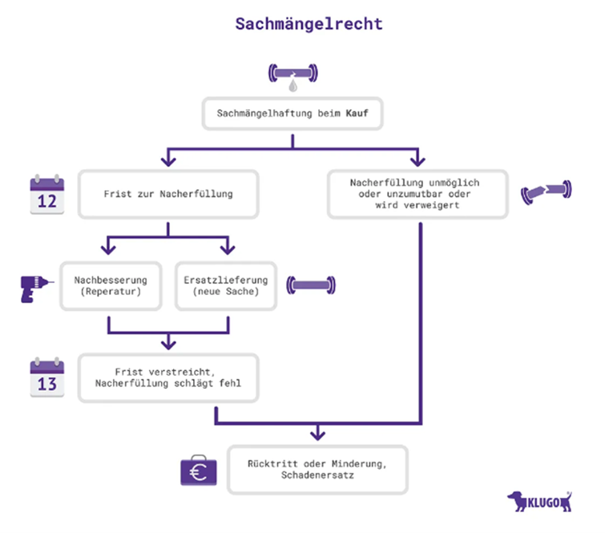

Sachmangel
Der Sachmangel ist in § 434 BGB geregelt. Dieser liegt vor, wenn die Kaufsache bei dem Gefahrübergang nicht die vereinbarte und zu erwartende Beschaffenheit aufweist bzw. die vorausgesetzte Verwendung nicht zu erwarten ist. Liegt ein Sachmangel vor, so kann der Käufer die Rechte aus § 437 BGB, also
-Nacherfüllung,
-Schadensersatz,
-Rücktritt,
-Minderung oder
-Aufwendungsersatz
gegenüber dem Verkäufer geltend machen.
Handelt es sich bei dem Käufer um einen Verbraucher (§ 13 BGB) und ist der Mangel innerhalb von sechs Monaten ab Gefahrenübergang aufgetreten, so gilt gemäß, § 476 BGB die Beweislastumkehr. Dies bedeutet, dass grundsätzlich davon ausgegangen wird, dass der Mangel bereits bei Übergabe vorhanden war.
